Mais qu'est-ce donc, le system tray ? Quel merveilleux procédé technologique se cache derrière ce nom barbare ?
Vous n'avez jamais voulu, un jour, voir votre logiciel s'afficher dans la zone de notifications ? Pouvoir enfin frimer et dire :
Citation : Un Zéro qui frime
Eh ben, mon logiciel, il est dans la zone de notifications et il m'affiche une p'tite bubulle !
Comme vous l'aurez compris, ce mini-tutoriel va vous permettre d'afficher votre logiciel dans la zone de notifications ! Au cas où vous ne le sauriez pas, « system tray » signifie « zone de notifications ». Nous aborderons aussi la méthode à utiliser pour créer des menus dans le system tray.
Bien : comme vous l'avez compris, nous allons essayer d'afficher l'icône de notre application dans la zone de notifications. Mais où se situe-t-elle ? Afin d'être sûr que vous avez compris, nous allons tout expliquer en détail.
Le menu Démarrer
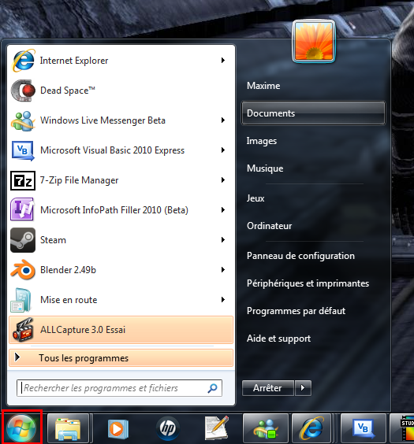
Le menu Démarrer s'ouvre en cliquant sur l'icône Windows (encadrée en rouge). Dans ce menu, nous pouvons ouvrir nos programmes favoris, éteindre l'ordinateur, accéder à des dossiers… Bref, le menu Windows classique.
La barre des tâches
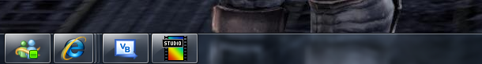
La barre des tâches se situe en bas et au milieu de l'écran. Elle permet de classer les programmes ouverts pour faciliter leur accès.
La zone de notifications
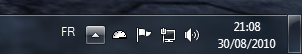
Et voici la fameuse zone de notifications. Dans cette zone située en bas à droite, on peut lire l'heure, la date, choisir la langue, voir l'état des programmes ouverts, cliquer sur les icônes, etc. Ces icônes pratiques permettent de cacher les fenêtres et donc de libérer de la mémoire. Maintenant que vous vous êtes familiarisé avec l'environnement Windows, nous allons pouvoir commencer à programmer !
Création d'un projet
Commencez tout d'abord par créer un nouveau projet Application Windows Forms que vous nommerez « NotifyZero » (voyez à quel point je me suis cassé la tête pour trouver un titre cohérent avec le nom du tutoriel :p ). Vous pouvez changer le nom du programme comme bon vous semble, mais faites attention à modifier le code que je vous donne.
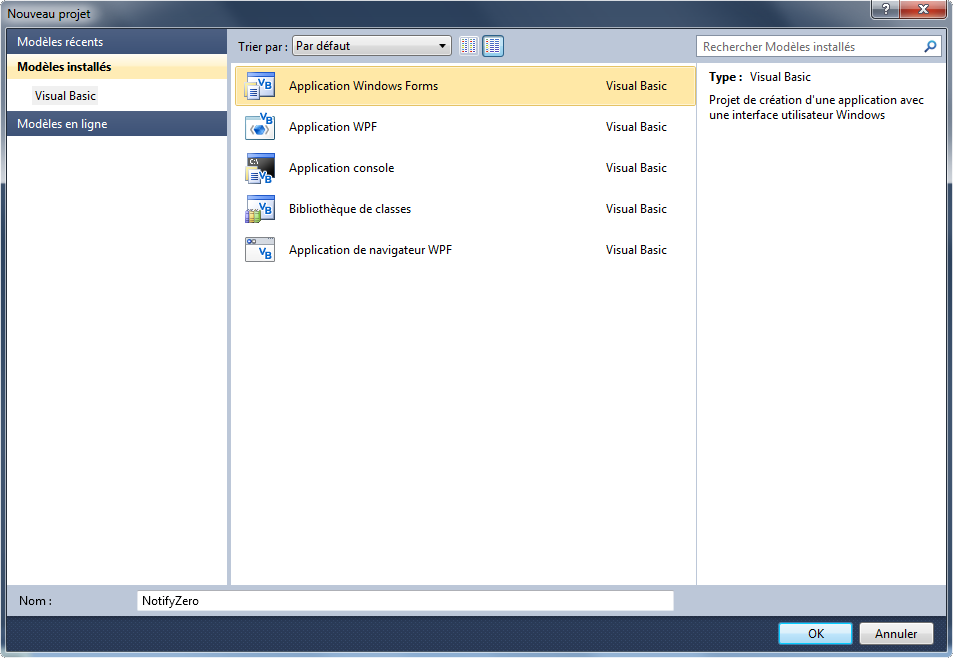
Configuration du Form
Vous arrivez maintenant sur la page de design du Form. Ajoutez-y un bouton que vous nommerez « bt_cacher » et remplissez la propriété Text par « Cacher ». À présent, vous pouvez voir dans votre boîte à outils que le contrôle NotifyIcon est présent dans le menu Contrôles communs :
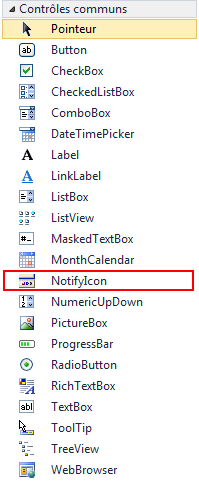
Comme vous le remarquez, le contrôle NotifyIcon est présent. Déplacez-le par glisser-déposer sur votre Form. Ce contrôle fonctionne de la même manière que les autres : la fenêtre des propriétés est bien remplie !
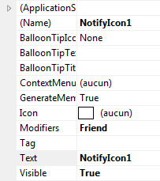
Dès que vous avez réussi à créer un contrôle NotifyIcon, vous n'avez plus qu'à le renommer en « not_zero ». Il ne vous reste donc plus qu'à exécuter le programme !
C'est tout à fait normal qu'il n'y ait rien, nous n'avons pas encore configuré le contrôle.
Place à la programmation
Nous avons déjà oublié quelque chose de très important. Comment peut-on afficher quelque chose dans la zone de notifications alors que nous n'avons pas d'icône pour le contrôle ? Double-cliquez sur la fenêtre pour générer un événement Load.
Nous allons associer une icône à notre contrôle. Deux choix s'offrent à nous :
utiliser l'icône de notre application ;
utiliser une icône Windows.
Icône de notre application
Gardons l'icône par défaut (les trois carrés) pour notre application. Voici comment procéder pour afficher l'icône dans la zone de notifications :
Private Sub Form1_Load(ByVal sender As System.Object, ByVal e As System.EventArgs) Handles MyBase.Load
Me.not_zero.Icon = Me.Icon ' L'icône de not_zero est celle de l'application.
End Sub
private void Form1_Load(object sender, EventArgs e)
{
this.not_zero.Icon = this.Icon; // L'icône de not_zero est celle de l'application.
}
Icône de Windows
Par défaut, Windows possède plusieurs icônes. À vous de choisir :
Private Sub Form1_Load(ByVal sender As System.Object, ByVal e As System.EventArgs) Handles MyBase.Load
Me.not_zero.Icon = SystemIcons.Application ' Affiche l'icône par défaut.
Me.not_zero.Icon = SystemIcons.Error ' Affiche l'icône d'erreur.
Me.not_zero.Icon = SystemIcons.Warning ' Affiche l'icône de danger.
Me.not_zero.Icon = SystemIcons.Question ' Affiche l'icône de question.
Me.not_zero.Icon = SystemIcons.Shield ' Affiche l'icône du bouclier Windows.
End Sub
Nous avons bien notre icône dans la zone de notifications, mais comment afficher un message ? Retournez en mode design, et créez un bouton que vous nommerez « bt_message » ainsi qu'un autre que vous nommerez « bt_erreur ». Maintenant, place au code. Je vais afficher deux événements (ceux de bt_message et bt_erreur) et les remplir.
Private Sub bt_message_Click(ByVal sender As System.Object, ByVal e As System.EventArgs) Handles bt_message.Click
With not_zero
.BalloonTipIcon = ToolTipIcon.Info ' Icône information de Windows.
.BalloonTipTitle = "NotifyZero" ' Titre du message.
.BalloonTipText = "Ceci est un message de NotifyZero" ' Corps du message.
End With
Me.not_zero.ShowBalloonTip(0) ' On affiche le message indéfiniment.
End Sub
Private Sub bt_erreur_Click(ByVal sender As System.Object, ByVal e As System.EventArgs) Handles bt_erreur.Click
With not_zero
.BalloonTipIcon = ToolTipIcon.Error
.BalloonTipTitle = "NotifyZero"
.BalloonTipText = "Une erreur est survenue dans NotifyZero"
End With
Me.not_zero.ShowBalloonTip(0)
End Sub
private void bt_message_Click(object sender, EventArgs e)
{
this.not_zero.BalloonTipIcon = ToolTipIcon.Info; // Icône information de Windows.
this.not_zero.BalloonTipTitle = "NotifyZero"; // Titre du message.
this.not_zero.BalloonTipText = "Ceci est un message de NotifyZero"; // Corps du message.
this.not_zero.ShowBalloonTip(0); // On affiche le message indéfiniment.
}
private void bt_error_Click(object sender, EventArgs e)
{
this.not_zero.BalloonTipIcon = ToolTipIcon.Error;
this.not_zero.BalloonTipTitle = "NotifyZero";
this.not_zero.BalloonTipText = "Une erreur est survenue dans NotifyZero";
this.not_zero.ShowBalloonTip(0);
}
Qu'est-ce que c'est compliqué ! Décortiquons le premier Sub.
Le fameux With : With not_zero ... End With. Vous vous en souvenez, j'espère ! Je l'ai utilisé pour éviter d'écrire Me.not_zero devant chaque propriété.
Nous allons à présent étudier les propriétés Balloon qui permettent de modifier l'apparence de la bulle qui s'affichera dans la zone de notifications.
Voici la première propriété : .BalloonTipIcon = ToolTipIcon.Info. La propriété .BalloonTipIcon permet de modifier l'icône dans la bulle. Il existe quatre types d'icône :
.Error : affiche l'icône d'erreur de Windows ;
.Info : affiche l'icône d'information de Windows ;
.Warning : affiche l'icône de danger de Windows ;
.None : n'affiche aucune icône !
Pourquoi n'y a-t-il pas .Question comme dans les MessageBox ?
Tout simplement parce que l'utilisateur n'a pas le choix ! Une bulle sert à informer, avertir ou signaler, elle ne peut pas demander quelque chose à l'utilisateur.
Voyons maintenant la seconde propriété : .BalloonTipTitle = "NotifyZero". Cette propriété, qui est d'une difficulté extrême ( :p ), permet d'afficher un titre dans la bulle. J'ai choisi « NotifyZero ».
Et voici la troisième propriété, la plus difficile qui soit : .BalloonTipText = "Ceci est un message de NotifyZero". Vous tapez le texte de la bulle.
Enfin, comment fait-on pour afficher la bulle ? C'est au tour de la dernière propriété de jouer : Me.not_zero.ShowBalloonTip(0). Difficile, non ?
Il y a un truc qui me gêne beaucoup : c'est quoi, ce « 0 » ? Pourquoi n'affiche-t-on pas seulement « () » ?
Cette propriété permet d'afficher le temps d'exécution de la bulle en millisecondes. Par exemple, si j'entre « 5000 », la bulle restera affichée cinq secondes. J'ai mis « 0 » car, par défaut, le temps d'exécution est d'environ trois mille millisecondes.
Maintenant, vous comprenez le deuxième Sub, vous n'avez pas besoin d'explication ! Voici un petit schéma qui montre le résultat :
J'ai une bonne nouvelle : on a enfin trouvé l'utilité du contrôle ContextMenuStrip ! Commencez par créer un ContextMenuStrip que vous nommerez « mnu_notify » :
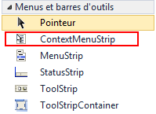
Maintenant, essayez de créer un menu comme celui affiché plus haut.
Afficher une image
Pour afficher une image à gauche de l'item, sélectionnez-le et cliquez sur le bouton de la propriété Image :
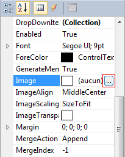
Cliquez ensuite sur Ressource locale puis sur Importer :
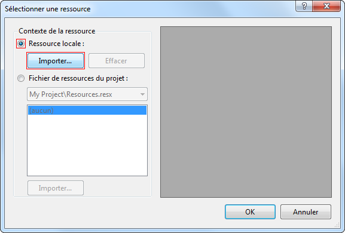
Afficher et utiliser les raccourcis clavier
Veillez bien à ce que la propriété ShowShortcutKeys soit sur True puis cliquez sur la flèche dans la propriété ShortcutKeys :
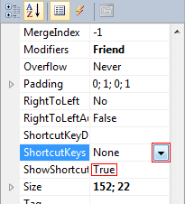
Sélectionnez ensuite vos raccourcis dans la liste déroulante.
Associer le menu à not_zero
Vous avez parfaitement configuré votre menu (et vous pouvez en être fier). Mais si vous exécutez le programme, par malheur, rien ne s'affiche ! Pas un petit bout de menu ! Nous avons en fait oublié une étape cruciale : associer « mnu_notify » à « not_zero ». Pour ce faire, sélectionnez « not_zero » et, dans la fenêtre des propriétés, cliquez sur ContextMenuStrip puis choisissez « mnu_notify » :
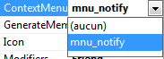
Le menu s'affiche correctement quand je fais un clic gauche.
Programmer les événements
Avoir le menu, c'est bien, mais pouvoir l'utiliser, c'est mieux !
Quitter
Commençons par l'item « Quitter » :
Private Sub FermerToolStripMenuItem_Click(ByVal sender As System.Object, ByVal e As System.EventArgs) Handles FermerToolStripMenuItem.Click
Application.Exit() ' On quitte TOTALEMENT l'application.
End Sub
Lorsque l'on clique sur « Quitter », on quitte l'application grâce à Application.Exit().
Pourquoi n'utilise-t-on pas plutôt Me.Close() ?
C'est vrai, on pourrait le faire, mais Me.Close() ferme seulement la fenêtre active. Pour fermer totalement et proprement l'application, je vous conseille Application.Exit().
Cacher
Lorsque l'on clique sur « Cacher », on cache la fenêtre.
On va cacher la fenêtre grâce à Me.Hide() :
Private Sub CacherToolStripMenuItem_Click(ByVal sender As System.Object, ByVal e As System.EventArgs) Handles CacherToolStripMenuItem.Click
Me.Hide() ' On cache la fenêtre.
End Sub
La fenêtre est alors cachée !
Ouvrir
Grâce au dernier événement, nous allons afficher la fenêtre cachée. Comment dit-on « afficher » en anglais ?
Private Sub OuvrirToolStripMenuItem_Click(ByVal sender As System.Object, ByVal e As System.EventArgs) Handles OuvrirToolStripMenuItem.Click
Me.Show() ' On affiche la fenêtre.
End Sub
Voilà, vous avez réussi à créer un menu dans la zone de notifications ! Sachez que vous pouvez créer des choses plus poussées, ce ne sont là que des exemples.
Dans cette partie, je classe toutes les petites astuces qui peuvent vous être utiles ; si vous en avez, faites-les-moi parvenir et je me ferai une joie de vous citer !
Émettre un bip
Vous pouvez, par exemple lorsqu'un message s'affiche, émettre un bip simple :
Console.Beep() ' Joue un bip simple.
Vous pouvez aussi modifier la durée (en millisecondes) et la fréquence (en Hz) du bip :
Console.Beep(2000, 1000) ' Joue un bip d'une fréquence de 2000 Hz et d'une durée de 1 seconde.
Afficher l'heure et la date
Qu'y a-t-il de plus amusant que d'écrire « Coucou ! Il est 19:05:02 et nous sommes le 29/08/2010 ! » ?
Private Sub bt_message_Click(ByVal sender As System.Object, ByVal e As System.EventArgs) Handles bt_message.Click
Dim jour As String ' On crée le jour.
Dim heure As String ' On crée l'heure.
jour = Date.Now.ToString("dd/MM/yyyy") ' jour = date du système.
heure = Date.Now.ToString("HH:mm:ss") ' heure = heure du système.
With not_zero
.BalloonTipIcon = ToolTipIcon.Info
.BalloonTipTitle = "NotifyZero"
.BalloonTipText = "Coucou ! Je me suis affiché à " & heure & " le " & jour & "." ' On affiche le jour et l'heure lorsque la bulle s'affiche.
End With
Me.not_zero.ShowBalloonTip(5000)
End Sub
private void bt_message_Click(object sender, EventArgs e)
{
string jour, heure; // On crée le jour et l'heure.
jour = DateTime.Now.ToString("dd/MM/yyyy"); // jour = date du système.
heure = DateTime.Now.ToString("HH:mm:ss"); // heure = heure du système.
this.not_zero.BalloonTipIcon = ToolTipIcon.Info;
this.not_zero.BalloonTipTitle = "NotifyZero";
this.not_zero.BalloonTipText = "Coucou ! Je me suis affiché à " + heure + " le " + jour + "."; // On affiche le jour et l'heure lorsque la bulle s'affiche.
this.not_zero.ShowBalloonTip(0);
}
Afficher le nom de l'utilisateur
Pour afficher le nom de l'utilisateur, utiliser la propriété UserName de la classe Environment :
Me.not_zero.BalloonTipText = "Bonjour " & Environment.UserName & " !" ' On affiche le nom de l'utilisateur
this.not_zero.BalloonTipText = "Bonjour " + Environment.UserName + " !"; // On affiche le nom de l'utilisateur
Ainsi s'achève ce mini-tuto traitant de l'affichage de son logiciel dans le system tray.
Voyez la simplicité pour afficher un petit message en deux lignes ! J'espère donc qu'à partir de maintenant, toutes vos applications seront accompagnées d'un NotifyIcon.
Si vous aimez ce tutoriel, laissez un petit commentaire ou envoyez-moi un MP. ;)